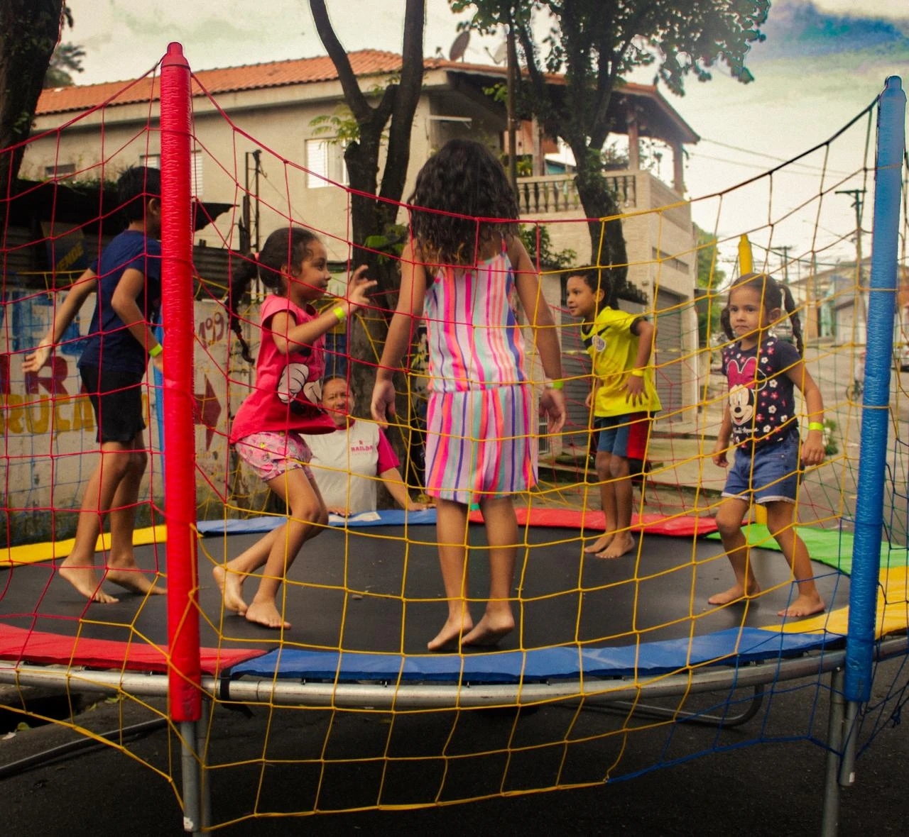

Convivência e Fortalecimento de Vínculos
As atividades são desenvolvidas em grupo, criando um ambiente seguro onde crianças e adolescentes podem interagir, compartilhar experiências e construir relações de confiança.
O foco está na convivência contínua, incentivando o respeito, a escuta ativa e o senso de pertencimento à comunidade.
- • Dinâmicas em grupo e rodas de conversa
- • Atividades colaborativas
- • Integração entre famílias e comunidade
Alinhado ao Serviço de Convivência e Fortalecimento de Vínculos (SCFV), dentro do SUAS.
